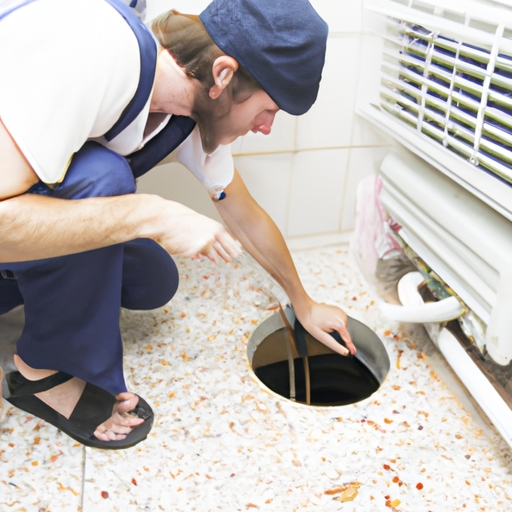

News
Emergency Drain Cleaning
Emergency Drain Cleaning
Clogged drains
Sewer backup
Water damage
Clogged Drains
Clogged Drains
Causes of clogs
DIY solutions
Professional drain cleaning services
Sewer Backup
Sewer Backup
Signs of sewer backup
Risks and health hazards
Remediation and prevention techniques
Water Damage
Water Damage
Effects of water damage
Restoration process
Insurance coverage for water damage
About Us
Contact Us
Common causes of clogged drains and how to prevent them

Common causes of clogged drains and how to prevent them
Posted by on 2024-08-19
Clogged drains are a common household nuisance that can lead to frustration and inconvenience. There are several common causes of clogged drains, but with some simple preventative measures, you can keep your drains flowing smoothly.
One of the most common causes of clogged drains is the buildup of hair and soap scum in bathroom drains. Over time, hair can accumulate in the drain and mix with soap residue, creating a sticky blockage that restricts water flow. To prevent this from happening, consider installing a drain strainer or hair catcher in your shower or bathtub to catch hair before it goes down the drain.
Another common culprit for clogged drains is food particles and grease in kitchen sinks. When food scraps or cooking oils go down the drain, they can solidify and create stubborn blockages. To avoid this, make sure to scrape all food waste into the trash before washing dishes, and never pour grease or oil down the sink. Instead, collect grease in a separate container and dispose of it properly.
Toilet paper and sanitary products are also frequent causes of clogged toilets. Flushing anything other than toilet paper down the toilet can lead to backups and blockages in your plumbing system. Be sure to only flush toilet paper down the toilet and dispose of other items like wipes or feminine hygiene products in the trash.
Tree roots growing into underground pipes can also cause clogs in your drainage system. If you notice slow draining or gurgling noises coming from your pipes, it could be a sign that tree roots have infiltrated your plumbing system. In this case, you may need to contact a professional plumber to assess the situation and remove any obstructions.
In addition to these common causes of clogged drains, there are some general maintenance tips you can follow to prevent blockages from occurring. Regularly flushing hot water down your drains can help dissolve grease and soap buildup, while using an enzymatic cleaner once a month can break down organic materials like hair and food particles.
By being mindful of what goes down your drains and taking proactive steps to prevent blockages, you can keep your plumbing system running smoothly and avoid costly repairs in the future. Remember that prevention is key when it comes to maintaining healthy drains!
Previous
Next